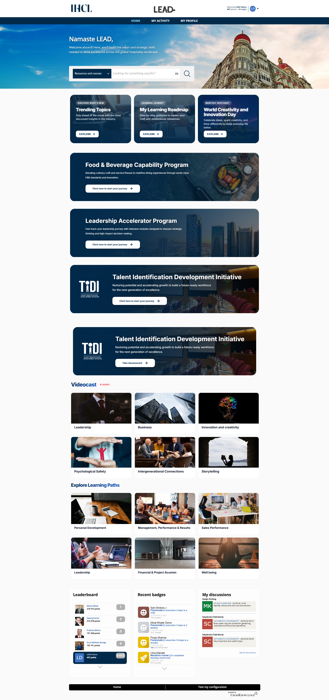
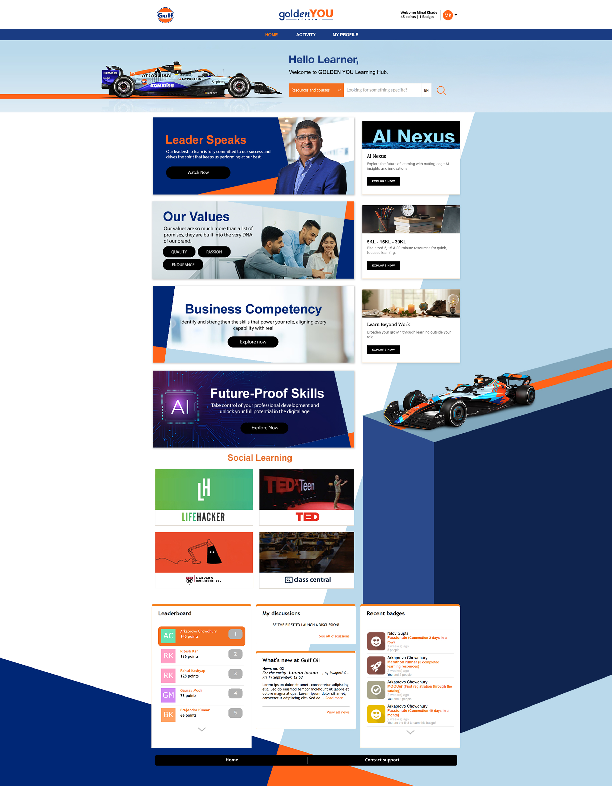

Overview
Project Summary
A portal UI concept for learners who need to access courses, progress states, certificates, and announcements with less confusion.
Learning Platform
A responsive learner dashboard direction built around course discovery, progress visibility, and quick access to training material.
Overview
A portal UI concept for learners who need to access courses, progress states, certificates, and announcements with less confusion.
Problem
Training content often becomes dense quickly. The interface needed stronger hierarchy, cleaner navigation, and more visible learner progress.
Solution
I separated learning actions into dashboard cards, module previews, status labels, and quick links so users can identify the next step quickly.
Tools
Figma, HTML, CSS, JavaScript, responsive grid systems, interaction states, and lightweight reveal motion.
Design Process
Grouped lessons, status, certificates, and reminders into logical interface zones.
Designed repeatable cards for courses, progress, recent activity, and recommendations.
Adjusted spacing, card stacking, and button placement for desktop, tablet, and mobile.
Portal UI Showcase
Taj IHCL

Tata Steel

Sudarshan

Vedant Fashions

Gulf Oil

Experience Focus
Each portal uses a distinct visual language instead of forcing every client into the same template.
Course cards, banners, modules, reports, and announcements are structured for repeatable portal use.
The laptop previews show full-page interface direction while keeping the work easy to review.